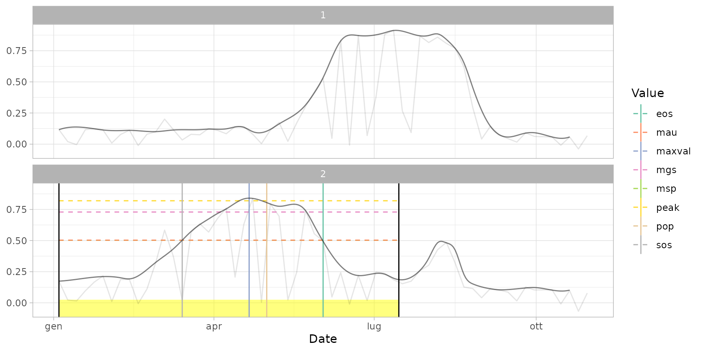
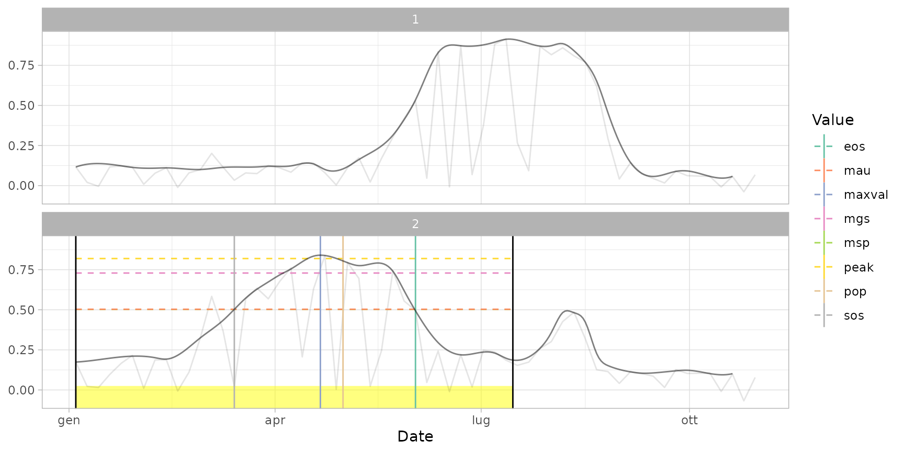

Filter detected cycles basing on dates of begin / end / peak, or limit the number of cycles allowed for any specified season.
assign_season(
pheno,
seasons = NA,
pop = NULL,
pop_win = NULL,
sos_win = NULL,
eos_win = NULL,
pop_name = "pop",
sos_name = "sos",
eos_name = "eos",
max_n_cycles = 2,
rm_unassigned = TRUE
)Arguments
- pheno
Cycle allocation (data table generated by
extract_pheno()orcut_cycles()).- seasons
Character vector with the season names to be used.
- pop
Vector with the expected dates of cycle peaks (one per season, it must be of the same length of
seasons), in the form"mm-dd"(month-day). If provided, it is used to filter cycles among seasons (see argumentmax_n_cycles).- pop_win
List with the allowed ranges for the dates of cycle peaks (one per season): each element is a two-length character vector with two elements, in the form
"mm-dd"(month-day), representing the range of the temporal window (see default value as example) within the corresponding season. The list must be of the same length ofseasons. Ifseasonis one-length,pop_seasonscan be also a two-length vector. Each element of the list can be left to NA in order not to specify any filtering condition.- sos_win
List with the allowed ranges for the dates of start of cycle (see
pop_seasonsfor details about the format).- eos_win
Named list with the allowed ranges for the dates of end of cycle (see
pop_seasonsfor details about the format).- pop_name
Character name of the field in
phenoto be used as metric for the date of peak (associated withpop_seasons).- sos_name
Character name of the field in
phenoto be used as metric for the date of start of cycle (associated withsos_seasons). Set to NULL in order not to apply.- eos_name
Character name of the field in
phenoto be used as metric for the date of end of cycle (associated withpop_seasons). Set to NULL in order not to apply.- max_n_cycles
(optional) Maximum number of cycles to be detected in one season (default: Inf, meaning that all the identified cycles are kept). If
popis provided, the cycles with the corresponding dates of peak closer to the dates set in argumentpop(for each seasons) are selected; otherwise, the fieldweightof the inputphenodataset is considered (cycles with the higher values are selected).- rm_unassigned
(optional) Logical: should cycles which do not match with any season (basing on the settings) be dropped from the output? (Default: TRUE)
Value
The input data table, filtered basing on arguments and with the
addition of the field season, containing the name of each season
(one among the ones specified in argument seasons) associated to each
cycle.
If seasons = NA this field is not returned.
Examples
# Load input data
data("dt_cycles")
data("dt_pheno")
data("ts_filled") # used for plots
# Filter one cycle per year, standard parameters (keep the most relevant cycle)
dt_cycles
#> id year cycle begin end maxval weight
#> 1: 1 2020 1 2020-04-27 2020-10-15 2020-07-13 88.71541
#> 2: 2 2020 1 2020-01-04 2020-07-16 2020-04-21 92.78070
#> 3: 2 2020 2 2020-07-16 2020-10-16 2020-08-08 13.91427
dt_cycles_seas <- assign_season(dt_cycles, max_n_cycles = 1)
dt_cycles_seas
#> id year cycle begin end maxval weight
#> 1: 1 2020 1 2020-04-27 2020-10-15 2020-07-13 88.71541
#> 2: 2 2020 1 2020-01-04 2020-07-16 2020-04-21 92.78070
plot(ts_filled, pheno = dt_cycles_seas)
 # Filter one cycle per year, keep the one with the peak clostest to 1st August
dt_pheno_seas1 <- assign_season(dt_pheno, max_n_cycles = 1, pop = "08-01")
plot(ts_filled, pheno = dt_pheno_seas1)
# Filter cycles with start of season between 1st February and 30th April
dt_pheno_seas2 <- assign_season(
dt_pheno,
sos_win = c("02-01", "04-30"),
)
plot(ts_filled, pheno = dt_pheno_seas2)

# Assign season names: "winter" for winter crops, "summer" for summer crops
# (defining winter crops as crops seeded between October and March,
# summer crops as crops seeded between April and August)
dt_pheno_seas3 <- assign_season(
dt_pheno,
seasons = c("winter", "summer"),
sos_win = list(c("10-01", "03-31"), c("04-01", "08-31")),
sos_name = "begin",
rm_unassigned = FALSE
)
# notice the new column "season"
dt_pheno_seas3
#> id year cycle season begin end maxval weight sos
#> 1: 1 2020 1 summer 2020-04-27 2020-10-14 2020-07-13 88.71541 2020-05-30
#> 2: 2 2020 1 winter 2020-01-04 2020-07-15 2020-04-21 92.78070 2020-03-14
#> 3: 2 2020 2 summer 2020-07-16 2020-10-15 2020-08-08 13.91427 2020-07-29
#> eos los pop mgs rsp rau peak msp mau
#> 1: 2020-08-26 88 2020-07-01 0.8183139 NA NA 0.8885069 0.4805396 0.4575946
#> 2: 2020-06-02 80 2020-05-01 0.7291655 NA NA 0.8196339 0.5021371 0.5032177
#> 3: 2020-08-20 22 2020-08-09 0.4262500 NA NA 0.4886998 0.3193936 0.2943121
# Filter one cycle per year, keep the one with the peak clostest to 1st August
dt_pheno_seas1 <- assign_season(dt_pheno, max_n_cycles = 1, pop = "08-01")
plot(ts_filled, pheno = dt_pheno_seas1)
# Filter cycles with start of season between 1st February and 30th April
dt_pheno_seas2 <- assign_season(
dt_pheno,
sos_win = c("02-01", "04-30"),
)
plot(ts_filled, pheno = dt_pheno_seas2)

# Assign season names: "winter" for winter crops, "summer" for summer crops
# (defining winter crops as crops seeded between October and March,
# summer crops as crops seeded between April and August)
dt_pheno_seas3 <- assign_season(
dt_pheno,
seasons = c("winter", "summer"),
sos_win = list(c("10-01", "03-31"), c("04-01", "08-31")),
sos_name = "begin",
rm_unassigned = FALSE
)
# notice the new column "season"
dt_pheno_seas3
#> id year cycle season begin end maxval weight sos
#> 1: 1 2020 1 summer 2020-04-27 2020-10-14 2020-07-13 88.71541 2020-05-30
#> 2: 2 2020 1 winter 2020-01-04 2020-07-15 2020-04-21 92.78070 2020-03-14
#> 3: 2 2020 2 summer 2020-07-16 2020-10-15 2020-08-08 13.91427 2020-07-29
#> eos los pop mgs rsp rau peak msp mau
#> 1: 2020-08-26 88 2020-07-01 0.8183139 NA NA 0.8885069 0.4805396 0.4575946
#> 2: 2020-06-02 80 2020-05-01 0.7291655 NA NA 0.8196339 0.5021371 0.5032177
#> 3: 2020-08-20 22 2020-08-09 0.4262500 NA NA 0.4886998 0.3193936 0.2943121